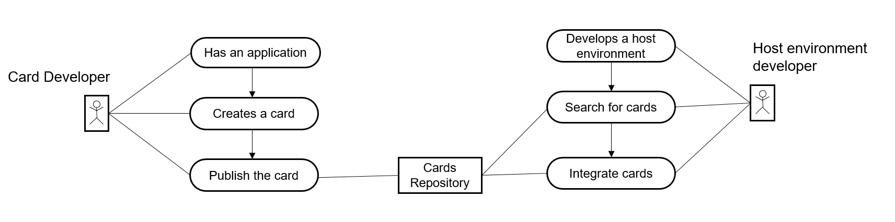

Developing Cards
In order to develop cards the card developers should be familiar with:
- Getting Started
- Card types (declarative)
- Card types (other)
- Data fetching and templating
- Card Actions
- Parameters
- Internationalization
- Data formatting
To kick-start your learning you can check the Explore section of the Card Explorer.
There you can edit the manifest.json file and see the result straight away. You can then
download the card as a self-contained bundle
and use it in other websites, such as SAP Work Zone.
For productive development we recommend to use more advanced environment such as the SAP Business Application Studio. For more information about how to develop cards, see the respective developer guide for SAP Build Work Zone, standard edition, or for SAP Build Work Zone, advanced edition.